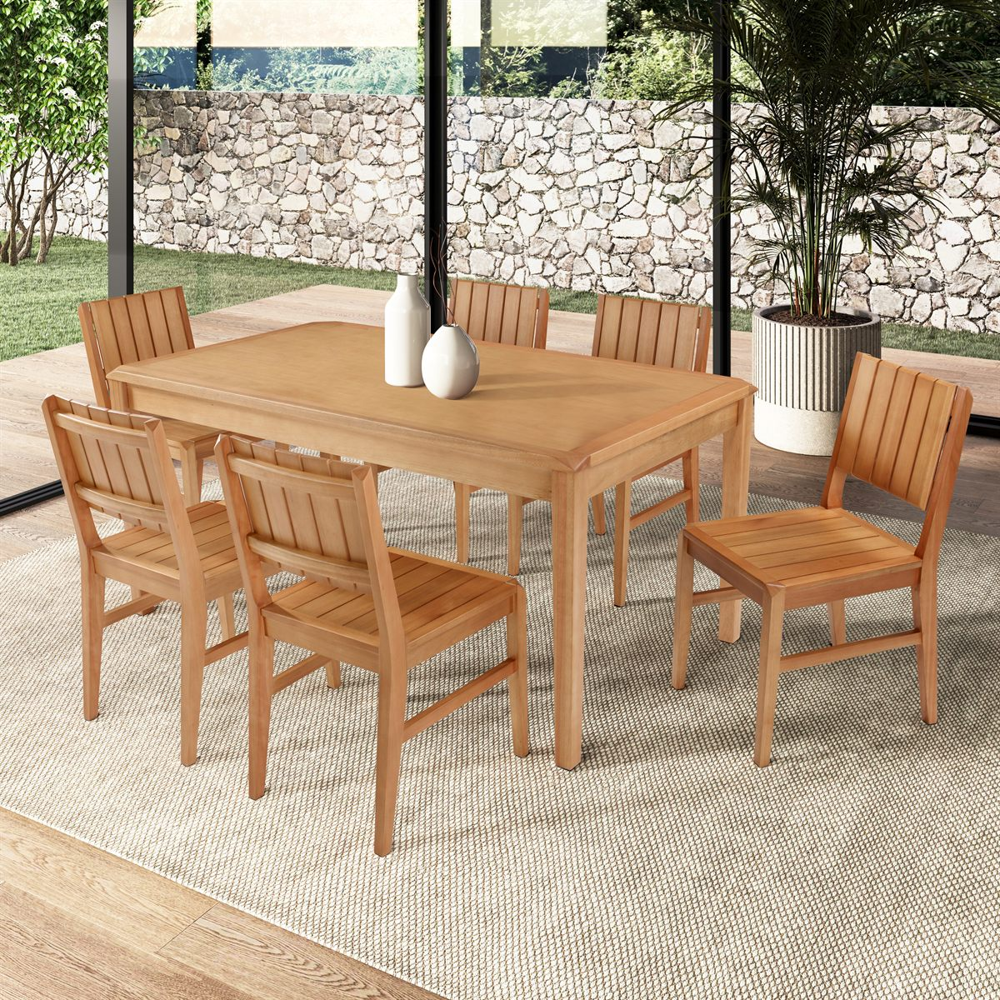
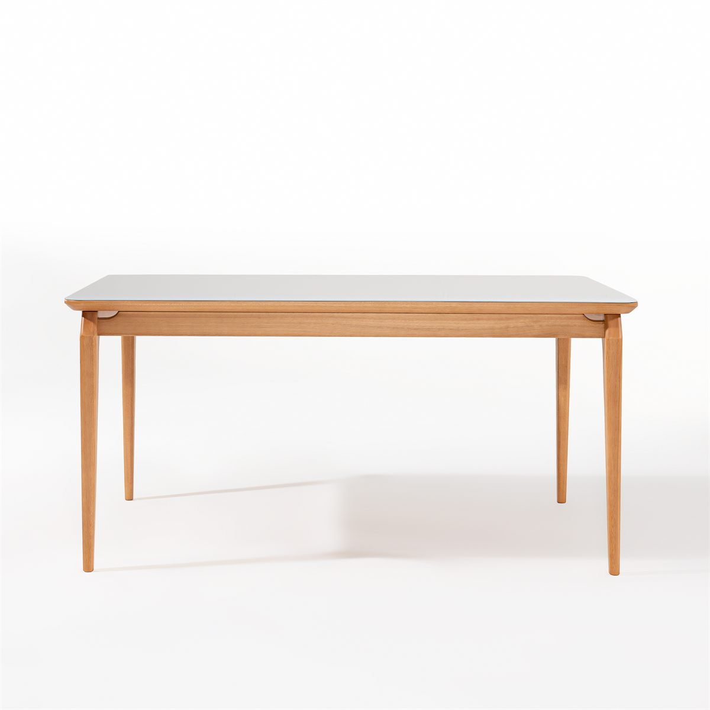

Fotografia Moveleira
Direção de luz, ângulos comerciais, textura, proporção e consistência visual para móveis, produtos e apresentações de linha.
Especialidade principal
A Decorelas foi posicionada para atender primeiro quem precisa vender, catalogar e apresentar móveis com qualidade técnica e valor percebido.

Direção de luz, ângulos comerciais, textura, proporção e consistência visual para móveis, produtos e apresentações de linha.

Cadeiras, abajures, banquetas, mesas laterais, mesas de centro, bancos e itens semelhantes.

Poltronas, cômodas, aparadores, mini berços, cabeceiras e produtos com maior volume visual.

Roupeiros, mesas de jantar, buffets, camas, colchões e móveis que exigem apresentação ampla e detalhada.
Formas de contratação

Indicada para fábricas e marcas que precisam de poucas imagens por produto para catálogo, pasta comercial ou apresentação rápida.

Indicada para quem vende pela internet e precisa de uma apresentação mais completa para e-commerce, marketplace e material comercial.
Soluções complementares
Cenários digitais para ampliar coleções, criar contexto e manter linguagem visual consistente.
Medidas aplicadas na imagem para especificação técnica, apoio comercial e materiais de produto.
Planejamento visual, seleção de imagens e diagramação para catálogos físicos e digitais.
Fotografia de produtos em geral com foco em recorte, leitura clara e apresentação comercial.


Portfólio em destaque